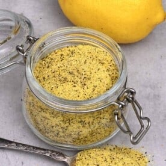

Lemon pepper seasoning

Description
This is a seasoning that has many different uses, however it really shines as a dry rub for protiens.
Use this simple three ingredient spice power to pack a punch to your chicken or fish dishes.
I especially recommend this over chicken wings.
Ingredients:
- Lemon zest
- Black peppercorns
- Flakey salt
Instructions
- Zest your lemon.
- Bake you lemon zest at 160C for 25 minutes.
- Remove your zest from the oven to cool
- Add to a pestle and morter, along with your black pepper corns
- Grind this mixture into a semi corse powder
- Add your flakey salt
- Grind mixture to a fine powder
- Toss over fried chicken wings, or rub into protein before cooking